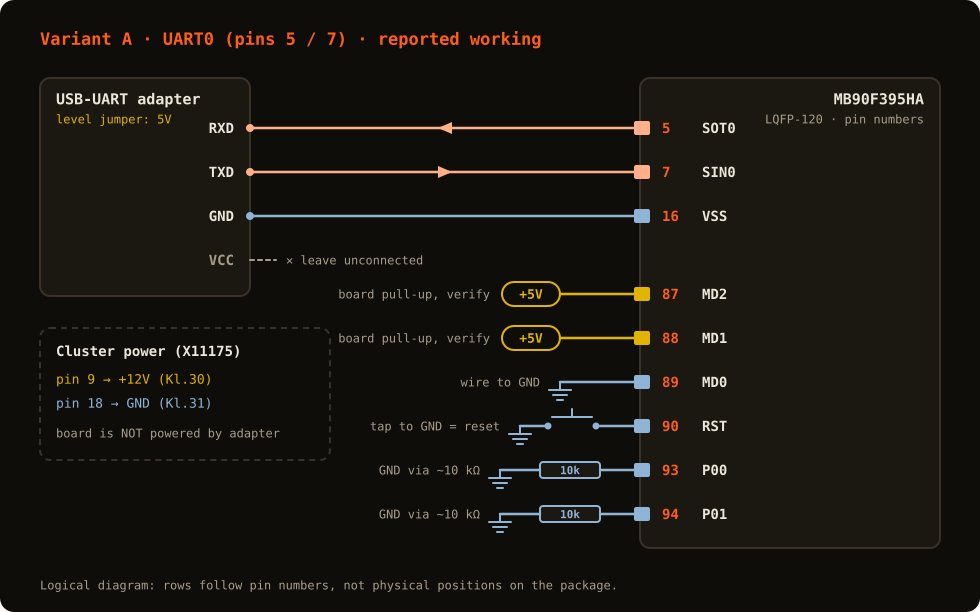
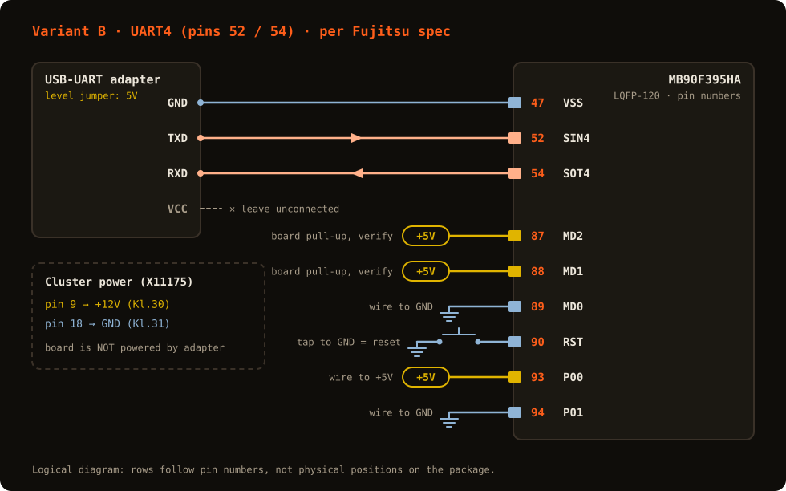

Снятие дампа flash через штатный Boot ROM загрузчик Fujitsu — не через диагностический протокол BMW, без обхода подписи. Применимо ко всем щиткам на этом МК: E9X BASIS (Low), HKOML2, DKOML2. Полный журнал с историей проверок: FUJITSU_MB90F395_UART_PINOUT.md.
Dumping the flash through the stock Fujitsu Boot ROM loader — not through BMW's diagnostic protocol, no signature bypass. Applies to every cluster on this MCU: E9X BASIS (Low), HKOML2, DKOML2. Full log with the history of every check (Russian): FUJITSU_MB90F395_UART_PINOUT.md.
MD0 = GND,
MD1 = MD2 = +5V. Прежняя версия этой страницы предлагала
MD2 → GND — судя по обоим источникам, это было неверно.
Status as of 2026-10-24. We have not yet
reached Boot ROM sync on our own board. There are two pinout variants:
A — another contributor actually dumped their cluster
with it; B — per the official Fujitsu specification.
Start with A. Both agree on the mode levels: MD0 = GND,
MD1 = MD2 = +5V. An earlier version of this page said
MD2 → GND — according to both sources that was wrong.


Схема логическая: строки идут по номерам выводов, а не по их положению на корпусе. VCC переходника не подключается; плата питается отдельно от 12 В через разъём X11175 (pin 9 = +12V, pin 18 = GND). Подписи на схеме — английские технические обозначения, одинаковые для обеих версий сайта.
The diagram is logical: rows follow pin numbers, not their physical position on the package. Leave the adapter's VCC unconnected; the board is powered separately from 12 V through connector X11175 (pin 9 = +12V, pin 18 = GND).
| ВыводPin | ИмяName | Вариант AVariant A | Вариант BVariant B |
|---|---|---|---|
| 5 | SOT0 / P34 | → RXD | — |
| 7 | SIN0 / P36 | ← TXD | — |
| 52 | SIN4 / PB4 | — | ← TXD |
| 54 | SOT4 / PB6 | — | → RXD |
| 16 / 47 / 106 | VSS | GND (16) | GND (47) |
| 87 | MD2 | +5V (подтяжка на плате — проверить мультиметром; старую перемычку на GND снять)(board pull-up — verify with a meter; remove any old wire to GND) | |
| 88 | MD1 | +5V (подтяжка на плате)(board pull-up) | |
| 89 | MD0 | GND | |
| 90 | RST | кратковременно на GND = сбросtap to GND = reset | |
| 93 | P00 | GND через ~10 кОмGND via ~10 kΩ | +5V |
| 94 | P01 | GND через ~10 кОмGND via ~10 kΩ | GND |
| 15 / 105 | VCC | питание платы, к переходнику не подключатьboard supply, do not connect to the adapter | |
MD2(87) → MD1(88) → MD0(89) →
RST(90) идут подряд на одной стороне корпуса — нашли один, остальные
рядом. Pin 1 (RX0) и Pin 2 (TX0) — это CAN, не UART,
несмотря на созвучные имена.
Soldering landmark: MD2(87) → MD1(88) →
MD0(89) → RST(90) are consecutive on one side of the package — find
one and the rest are next to it. Pin 1 (RX0) and pin 2
(TX0) are CAN, not UART, despite the names.
Читать программой isp-mb9x (Windows) строго с ключом /R — только чтение; без него она стирает и пишет чип. Прочитайте дважды и сравните файлы. Подробности — README.
Read with isp-mb9x (Windows), always with /R — read-only; without it the tool erases and programs the chip. Read twice and compare the files. Details in the README.
.\isp-mb9x.exe /LCOM4 /t /a /o5 /MB90F395H /b kombi_dump.bin /R /sf80000Скрипт fujitsu_flasher.py из репозитория не использовать: его протокол не подтверждён.
Do not use the repository's fujitsu_flasher.py: its protocol is unverified.
DVSS (pin 86) — на простых платах он в той же сети GND; сначала подтвердите прозвонкой.DVSS (pin 86) — on simple boards it is on the same GND net; confirm with the meter first.Пайка на 0.5 мм: провод 30–32 AWG, тонкое конусное жало, флюс, фиксация каптоном или термоклеем.
Soldering at 0.5 mm: 30–32 AWG wire, a fine conical tip, flux, then secure with Kapton tape or hot glue.
Номера и функции выводов — даташит Fujitsu/Spansion DS07-13723-8Ea
«MB90390 Series» (таблица «MB90394HA/MB90F394HA/MB90F395HA»). Выводы
Boot ROM (SIN4/SOT4/P00/P01) и уровни MD — спецификация
Fujitsu «FLASH MCU Programmer for F2MC-16LX», строка MB90F395H;
номера SIN4=52/SOT4=54 независимо совпадают с базой
программатора iProg. Вариант A — рабочая схема другого участника,
сообщённая напрямую; нами на своей плате ещё не проверена. Сами
документы Fujitsu в репозиторий не выкладываются.
Pin numbers and functions — Fujitsu/Spansion datasheet DS07-13723-8Ea
“MB90390 Series” (table “MB90394HA/MB90F394HA/MB90F395HA”). Boot ROM pins
(SIN4/SOT4/P00/P01) and MD levels — the Fujitsu “FLASH MCU
Programmer for F2MC-16LX” specification, row MB90F395H; the
SIN4=52/SOT4=54 numbers independently match the iProg
programmer database. Variant A is another contributor's working setup,
reported directly; not yet verified on our board. The Fujitsu documents
themselves are not published in the repository.